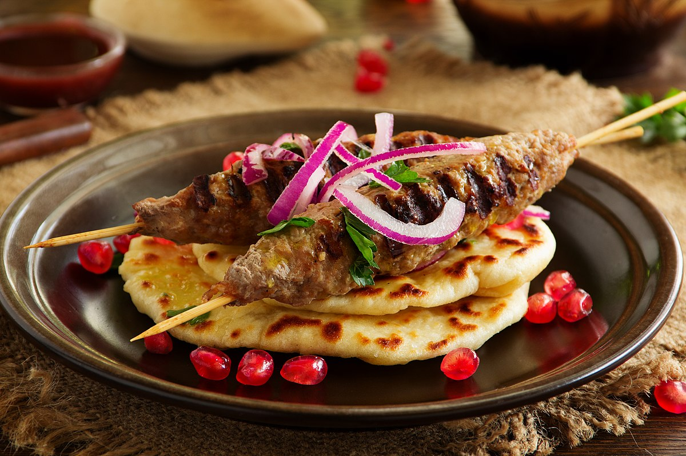

Home
Kebab

Description
Kebab is a classic Turkish dish made with seasoned ground meat, shaped onto skewers, and grilled to perfection. Served with fresh vegetables, warm bread, or rice, this flavorful dish is a must-try for meat lovers.
Ingredients
For the kebab
- 1 pound ground beef or lamb
- 1 small onion, grated
- 2 cloves garlic, minced
- 1 teaspoon salt
- 1 teaspoon black pepper
- 1 teaspoon paprika
- 1/2 teaspoon cumin
- 1/4 teaspoon red pepper flakes
- 2 tablespoons chopped parsley
For serving
- Warm pita or flatbread
- Chopped onions and tomatoes
- Fresh parsley
- Lemon wedges
Steps
- Prepare the meat mixture – In a bowl, mix ground meat, grated onion, garlic, and spices. Knead well and let it rest for 30 minutes.
- Shape and cook – Form the mixture into long, thin kebabs around skewers. Grill over medium-high heat for 8-10 minutes, turning occasionally.
- Serve and enjoy – Place kebabs in warm pita, add fresh veggies, sprinkle with parsley, and squeeze lemon on top. Enjoy your delicious homemade kebab!